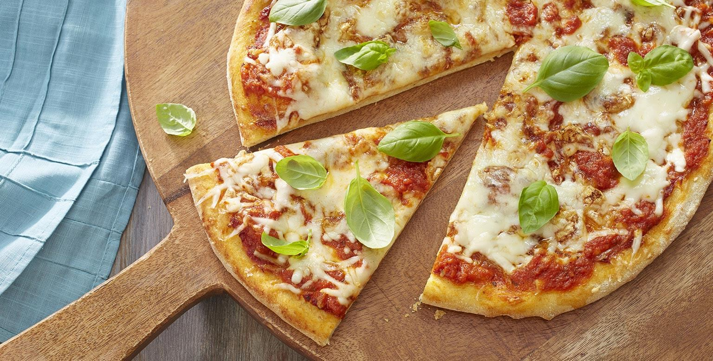
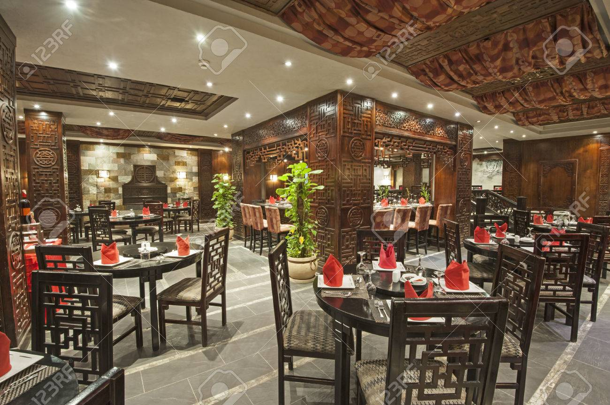
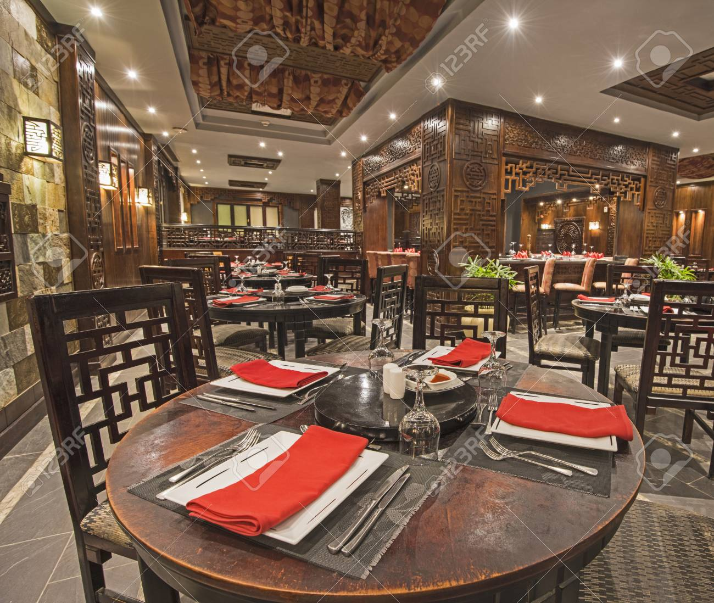

T est un grossiste en pizzas surgelées et autres produits surgelés, qui livre pour l'essentiel aux mêmes clients que P. Les pizzas distribuées par T détiennent 30 % du marché.


Pizzeria
Il y a bien longtemps, un cow-boy mexicain, Jose Mancini (Joe), travaillait dans une ferme au Texas, aux États-Unis. Un jour, alors que Joe rentrait chez lui, il fut arrêté par l'arôme paradisiaque de nourriture provenant d'une boulangerie située à proximité. En entrant, Joe trouva une belle fille appelée Isabella qui y travaillait. Elle appartenait à une famille immigrante de Sicile. Italie....